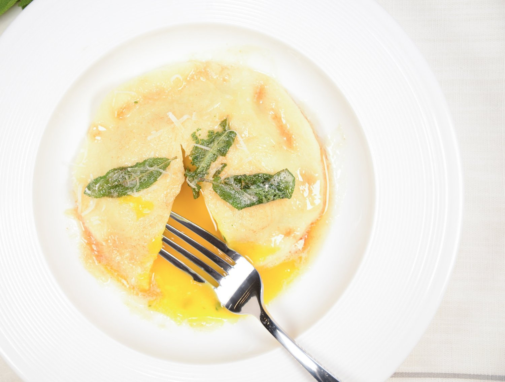

Raviolo Al Uovo

Description
Ingredients
For the Pasta
- 1/2 pound of flour
- 2 eggs plus one egg yolk
- 2 tablespoons extra-virgin olive oil
Steps
-
Mound the flour on a clean, dry work surface. Make a big hole (called a
well) in the center of the flour pile--bigger is definitely better here.
Crack the eggs into the hole along with the extra yolk, olive oil, and 2
tablespoons water; season with salt. Using a fork, beat the eggs
together with the olive oil, water, and salt and begin to incorporate
the flour into the egg mixture. Be careful not to break the well or the
egg mixture will run everywhere and you'll have a big fat mess on your
hands (and your board). When enough flour is incorporated that you can
handle the dough, use your hands to combine everything really well. If
the mixture is tight and dry, wet your hands a bit. When the mixture is
homogeneous, start kneading...
-
To knead the dough, it's VERY important to put your body weight into it,
to get on top of the dough, and really stretch it. Be careful not to
tear it--the idea is that you stretch the dough, not rip it. Use the
heels of your palms and roll the mixture over itself. When it's done it
should be smooth, supple, and velvety and look like the head of a
preemie Cabbage Patch Doll. Kneading will take anywhere from 8 to 15
minutes, depending on how experienced you are. (Don't hold back: This is
where the perfect, toothsome texture of your pasta is formed. Get in
there and work it!)
-
When the pasta is ready, wrap it in plastic and let rest for at least an
hour at room temperature before rolling. If you're making the dough
ahead of time, wrap, refrigerate, and bring to room temperature before
using.
-
To roll out the pasta, you need to run the dough through the pasta
roller a bunch of times to get it long and thin. To start, cut off about
a quarter of the dough (remember, the bigger the piece you start with,
the longer your dough is going to get), keeping the rest wrapped up so
it doesn't dry out. Squish the dough to flatten it--this will help it
run through the pasta roller more easily. Where do we start? We start at
the beginning! Run the dough through the pasta roller starting on the
widest setting, number 1. Then dust the dough with flour, fold it into
thirds, and put the dough through this setting two more times. If the
dough ever feels sticky or tacky, give it a little dusting of flour. Now
adjust the setting to number 2 and repeat the process again--changing
the setting each time until your dough is the desired thickness. Once
the dough is rolled out, be sure to keep the pasta sheets covered so
they don't dry out. Depending on what I want to use the pasta for, I
usually stop around number 5 or 6. For long noodles, I keep it thicker,
and for ravioli or stuffed pasta, I keep it thinner. All pasta machines
are different, so you need to judge how your pasta machine works and
adjust your rolling accordingly. Once you get the thickness you want,
repeat this process with the remaining pieces of dough.
For the Filling
- 2 cups ricotta cheese
- 1 cup freshly grated Parmigiano, plus more for garnish
- 1/4 cup chopped fresh Italian parsley
- 2 large eggs plus 8 large egg yolks
- Kosher salt
- All-purpose flour, as needed
- Semolina flour, as needed
- 8 tablespoons (1 stick) unsalted butter
- 2 cups chicken stock
- 1/4 cup chopped fresh sage leaves
Steps
-
In a medium bowl, combine the ricotta, Parm, parsley and 2 whole eggs;
mix well and season with salt.
-
Dust a clean work surface lightly with all-purpose flour and lay out two
sheets of pasta about 12 inches long; brush them lightly with water.
Equally space 4 dollops of the ricotta mixture on each pasta sheet; then
use a spoon to make a "nest" or small hole in the center of each dollop.
Carefully separate the remaining eggs (reserve the whites for another
purpose) and put a yolk in each ricotta "nest"--the ricotta should
lovingly nestle each yolk (if a yolk breaks, scoop it out with a spoon
and don't use it).
-
Cover the ricotta nests and egg yolk with another sheet of pasta. Use
your index fingers to press around each ricotta nest to seal the edges,
then use a fluted ring cutter or dough roller to cut around each ravioli
(they should be 3 to 4 inches in diameter). Reserve the ravioli on a
tray generously dusted with semolina.
-
Bring a large pot of well-salted water to a boil. In a large saute pan,
melt half the butter and add half of the chicken stock (you're going to
use the remainder for your next batch); season with salt and toss in
half the sage. Bring this to a boil (BTB) and reduce to simmer (RTS).
-
Add 4 of the ravioli to the boiling water and cook for 3 minutes. Using
a spider or slotted spoon, carefully transfer the ravioli from the water
to the pan with butter and chicken stock and cook for 2 to 3 minutes. If
the sauce reduces too much, add a few drops of the pasta cooking water.
The sauce should cling to the ravioli in a buttery hug.
-
Transfer the ravioli to serving plates, spoon a little extra sauce over
each one, and finish with a sprinkle of grated Parm. Repeat with the
remaining ravioli.